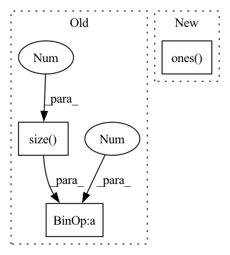

Pattern ID :9847

Before Change
// batch-wise random inverse normal vector (prob: 0.5)
if random_inv:
random_mask = torch.randint(0, 2, (group_xyz.size(0), 1)).float() * 2. - 1.
random_mask = random_mask.to(unit_nor.device)
if not is_group:
unit_nor = unit_nor * random_mask
After Change
random_mask = []
sample_offset = [0] + list(offset.cpu().numpy())
for idx in range(len(sample_offset) - 1):
sample_mask = torch.ones((sample_offset[idx+1] - sample_offset[idx], 1), dtype=torch.float32)
if not batch_prob[idx]:
sample_mask *= -1
random_mask.append(sample_mask)
random_mask = torch.cat(random_mask, dim=0).to(unit_nor.device)
In pattern: SUPERPATTERN
Frequency: 3
Non-data size: 3
Instances
Fragment ID: 35298630
Project Name: hancyran/repsurf
Commit Name: e320999634bd03b5020e1af0092663c02c862ba8
Time: 2022-09-18
Author: ranhaoxi@gmail.com
File Name: segmentation/modules/recons_utils.py
M Class Name: AnonimousClass
N Class Name: AnonimousClass
M Method Name: cal_normal(4)
N Method Name: cal_normal(3)
M Parent Class:
N Parent Class:
M File Name: segmentation/modules/recons_utils.py
N File Name: segmentation/modules/recons_utils.py
M Start Line: 28
M End Line: 29
N Start Line: 10
N End Line: 37
'>
Before Change
sim_mat = torch.exp(sim_mat / self.tau)
// getting rid of diag
diag_ind = torch.eye(xi.size(0) * 2).bool()
diag_ind = diag_ind.cuda() if use_cuda else diag_ind
sim_mat = sim_mat.masked_fill_(diag_ind, 0)
After Change
sim_match = torch.exp(torch.sum(xi * xj, dim=-1) / sim_mat_denom / self.tau)
sim_match = torch.cat((sim_match, sim_match), dim=0)
loss = torch.mean(-torch.log(sim_match / (torch.sum(sim_mat, dim=-1) - torch.exp(torch.ones(x.size(0)) / self.tau))))
return loss
'>
Fragment ID: 35298628
Project Name: mdiephuis/simclr
Commit Name: 783700fd818653b30b40b6155952f3ce98fe9930
Time: 2020-03-06
Author: shideh.rezaeifar@unige.ch
File Name: loss.py
M Class Name: contrastive_loss
N Class Name: contrastive_loss
M Method Name: forward(3)
N Method Name: forward(3)
M Parent Class: nn.Module
N Parent Class: nn.Module
M File Name: loss.py
N File Name: loss.py
M Start Line: 12
M End Line: 32
N Start Line: 12
N End Line: 30
'>
Before Change
zero_pad = torch.zeros(zero_pad_shape, device=x.device, dtype=x.dtype)
x_padded = torch.cat([zero_pad, x], dim=1)
x_padded_shape = (x.size(1) + 1, x.size(0)) + x.size()[2:]
x_padded = x_padded.view(*x_padded_shape)
x = x_padded[1:].view_as(x)
After Change
x_padded = x_padded.view(*x.size()[:2], k_len + 1, q_len)
x = x_padded[:,:,1:,:].view_as(x)
if zero_triu:
ones = torch.ones((q_len, k_len), device=x.device)
x = x * torch.tril(ones, k_len - q_len)[None,None,:,:]
return x
def forward(self, w, cat, r, attention_mask=None):
'>
Fragment ID: 35298629
Project Name: tongjilibo/bert4torch
Commit Name: e7a71b5780f0c193c2575f5dec687cb004c50ab2
Time: 2022-05-23
Author: tongjilibo@163.com
File Name: bert4torch/layers.py
M Class Name: RelPartialLearnableMultiHeadAttn
N Class Name: RelPartialLearnableMultiHeadAttn
M Method Name: _rel_shift(3)
N Method Name: _rel_shift(2)
M Parent Class: MultiHeadAttentionLayer
N Parent Class: MultiHeadAttentionLayer
M File Name: bert4torch/layers.py
N File Name: bert4torch/layers.py
M Start Line: 532
M End Line: 539
N Start Line: 535
N End Line: 546